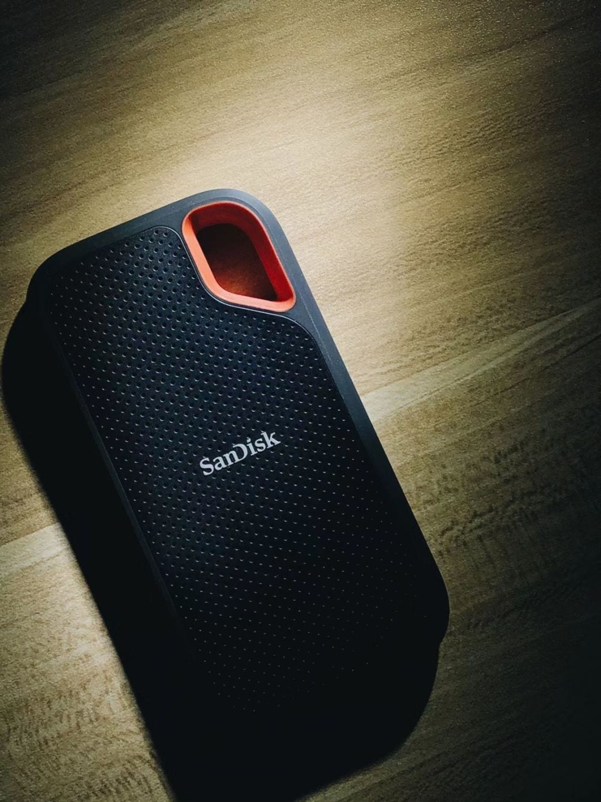

闪迪 E61 移动固态硬盘 1TB

三防移动固态的经典款，1050MB/s 读取配 IP65 防尘防水与两米抗摔，名片大小随身携带无压力，适合摄影师与差旅用户随身存储素材。
客观评测
闪迪 E61 移动固态采用 USB 3.2 Gen2 Type-C 接口，顺序读取最高 1050MB/s、写入 1000MB/s，标称 IP65 防尘防水并可承受约 2 米跌落。机身约 100×52×9mm、重约 52g，支持 AES 256-bit 硬件加密与 Windows/macOS/Android 多平台。附带双头数据线与 SanDisk Memory Zone 备份软件，5 年质保。实测拷贝数百 GB 素材时后段会因温度上升出现降速，属该形态产品的共性。
主观点评
带着它跑过几次外拍，塞进摄影包侧袋几乎没有存在感，硅胶外壳手感防滑，摔过一次捡起来照常工作。拷贝相机 SD 卡素材时速度轻快，比机械移动硬盘快得多。最看重的还是三防属性——户外遇到小雨或沙尘不必手忙脚乱。长时间连续写入会温热降速，但对一次性拷几十 GB 的使用场景完全够用。
优点与不足
- IP65 三防加抗摔，户外使用放心
- 仅约 52g，口袋随身无感
- 自带加密，素材安全性高
- 连续大文件写入会因过热降速
- 价格比普通移动固态略高
参数规格
| 容量 | 1TB |
|---|---|
| 接口 | USB 3.2 Gen2 Type-C |
| 顺序读取 | 最高 1050MB/s |
| 顺序写入 | 最高 1000MB/s |
| 防护 | IP65 防尘防水 + 约 2 米抗摔 |
| 加密 | AES 256-bit 硬件加密 |
| 兼容 | Windows / macOS / Android |
| 尺寸 | 约 100×52×9mm |
| 重量 | 约 52g |
| 附件 | USB-C 转 USB-C / USB-C 转 USB-A 线 |
| 软件 | SanDisk Memory Zone 备份管理 |
| 质保 | 5 年质保 |